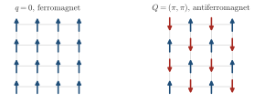
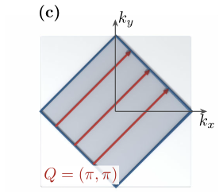
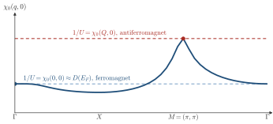
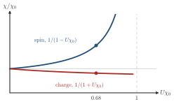

Advanced Quantum Materials 2027 · All lectures · Lecture notes
Session 9. Excitations and Defects in Quantum Materials
9.5b The Stoner instability
In the first part we used the denominator of (9.6) for the density channel and for the plasmon.
The Stoner criterion as an instability of the response function. Now we use the same RPA logic in the spin channel of an interaction of Hubbard type, so that \(\chi_0\) in (9.6) becomes the non-interacting spin susceptibility. The sign is the opposite of the density channel, because \(U n_\uparrow n_\downarrow = \tfrac{U}{4}(n^2 - m^2)\) is repulsive for the density and attractive for the magnetization, so the same \(U\) screens the charge response and enhances the spin response, and the denominator of (9.6) becomes \(1-U\chi_0\). The interacting spin response diverges when
\[U\, \chi_0(q,0) = 1. \tag{9.8}\]
At \(q=0\) we use the limit \(q\to0\) of (9.4), \(\chi_0(0,0) = D(E_F)\), so (9.8) becomes \(U\,D(E_F) = 1\). This is exactly the Stoner criterion for itinerant ferromagnetism, which says that an interacting metal becomes magnetic once the product of the density of states at the Fermi level and the interaction strength is larger than one. However, (9.8) is more general than the special case \(q=0\). For a Fermi surface with strong nesting, such as the half-filled square lattice of Section 9.4, \(\chi_0(q,0)\) has its maximum not at \(q=0\) but at the nesting vector \(Q=(\pi,\pi)\), where it is already logarithmically enhanced. The instability threshold in (9.8) is then reached first at \(Q=(\pi,\pi)\) and not at \(q=0\). As a result, the system develops a staggered antiferromagnetic instability and not a uniform ferromagnetic one, and this happens at a smaller value of \(U\) than the simple Stoner estimate predicts. The two patterns are drawn in Schematic 9.6, and the Fermi surface that favors the second one is shown again below.



For the half-filled square lattice we have \(\chi_0(0,0)=0.26/t\) and \(\chi_0(\pi,\pi)=0.68/t\) at \(T=0.1t\). With (9.8), where does the first instability appear as we increase \(U\)?
Show the answers
- A. ✗ False
This is false. The value \(U=3.8t\) is \(1/0.26t\), which is the threshold for the ferromagnetic channel. At \(U=1.5t\) the antiferromagnetic channel already satisfies \(U\chi_0(\pi,\pi)=1\), so the instability appears earlier.
- B. ✓ True
This is true. The condition \(U\chi_0(q,0)=1\) is first met at the largest \(\chi_0\). At \(Q=(\pi,\pi)\) we get \(U=1/0.68t\approx1.5t\), and the response there is staggered.
- C. ✗ False
This is false. At \(U=1.5t\) the ferromagnetic channel gives \(U\chi_0(0,0)=1.5\times0.26=0.39\), which is far from one. The ferromagnetic instability needs a larger \(U\).
The same \(U\) reduces the charge response and enhances the spin response. Which relation explains this?
Show the answers
- A. ✗ False
This is false. Particle conservation holds for both channels, so it cannot decide. If the charge denominator were \(1-U\chi_0\), then \(U=1.5t\) would give a charge divergence at \(Q\) for a repulsive \(U\), which does not occur.
- B. ✓ True
This is true. The identity gives \(+\tfrac U4 n^2\) and \(-\tfrac U4 m^2\). The charge denominator is \(1+U\chi_0\), which is \(1.68\) at \(U=t\) and \(\chi_0=0.68/t\), and the spin one is \(1-U\chi_0=0.32\).

The factor of (9.6) in the two channels, with the point \(U\chi_0=0.68\) for \(U=t\). The charge response drops to \(0.60\) of \(\chi_0\) and the spin response grows to \(3.1\) times \(\chi_0\). - C. ✗ False
This is false. If the spin response stayed at \(\chi_0\), there would be no Stoner instability at any \(U\). The ferromagnet that appears above \(U=1/\chi_0(0,0)\) would not exist.
Try it. Go to the second cell of this section, which adds the interaction \(U\) to a dimerized chain. Run it with U = 2.0 and compare the two response panels. Without RPA the low-energy weight near \(q=0\) is small. With RPA a strong peak appears there at low energy. Then set U = 0.5 and check that the enhancement is much weaker.
This is the connection that the course has been preparing. In Sessions 1 and 6 we obtained magnetism by writing the Hubbard model, applying mean-field theory directly to the ordered state, and solving self-consistently for a non-zero magnetization \(m\), as in Equation 1.7 of Section 1.14. In this session we have obtained the same physics, with the same threshold \(U\,D(E_F)=1\) and the same preference for antiferromagnetism at half filling, without writing any ordered mean-field ansatz. Instead, we asked when the paramagnetic, disordered response function develops a divergence, which is the same logic as the classical susceptibility of Section 9.2. Mean-field theory and the response function are two ways to reach the same instability. The first one computes it from the side where the symmetry is broken, and the second one computes it only from the symmetric side, by following how this state becomes unstable.
The same method, applied to different response channels and to different signs of the interaction, classifies a whole family of instabilities, which we write here explicitly. On the slides this classification into three cases is presented as a clear summary table, in a more systematic way than in the spoken lecture, which mainly worked out the magnetic case in detail.
| Instability | Response channel | Interaction sign |
|---|---|---|
| Magnetism | spin response | repulsive |
| Dimerization / charge density wave | charge-phonon response | repulsive |
| Superconductivity | electron-electron scattering response | attractive |
Notebook check-in: session9.ipynb, “The charge-charge response function” (Challenge)
The same notebook section that we used above for nesting is extended, in its second part, to the interacting case. You add a Hubbard interaction \(U\) and an external staggered, antiferromagnetic field to a dimerized chain, and you look at what happens to the response as \(U\) increases. This is the version of equation (9.8) on the scale of a notebook, where the Stoner instability appears when \(U\) goes above the threshold set by \(\chi_0\).